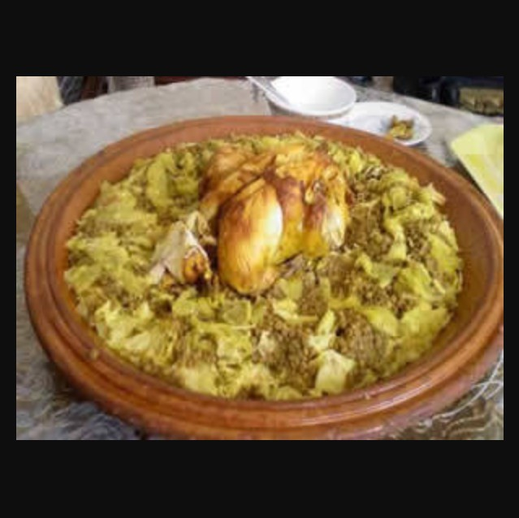

Rafisa Recipe

Rafisa( spelled Rafisa) is a celebrated Moroccan comfort dish made of stewed chicken, lentils,
and onions served over a bed of shredded pastry or bread.
It is deeply rooted in Moroccan tradition, particularly as a nourishing meal for women recovering from childbirth.
Key features of Rafisa
-
The Base : The stew is typically served over shredded msemmen (Moroccan pancakes), trid (paper-thin pastry), or even day-old bread.
-
The Flavor Profile : It is famous for its fragrant and earthy broth seasoned with Ras el Hanout, saffron, ginger, and turmeric.
-
Distinctive Ingredients:
-
Fenugreek (Helba): A key herb that gives the dish its unique,
slightly bitter aroma and is believed to have medicinal benefits for nursing mothers.
-
Lentils: These are cooked until tender in the chicken broth, making the meal very hearty.
-
Smen: A traditional Moroccan aged, salted butter that adds a pungent, deep flavor to the sauce.
Back to home page